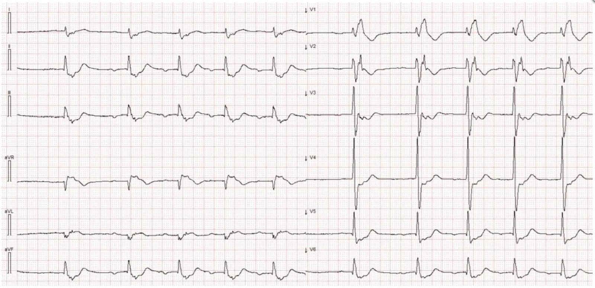
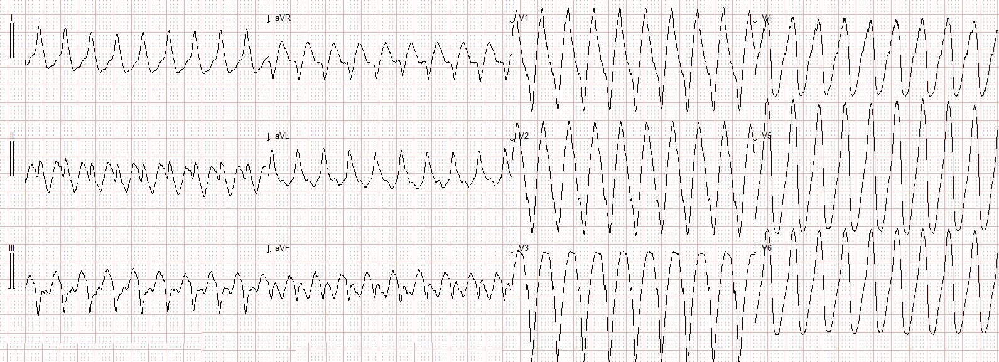
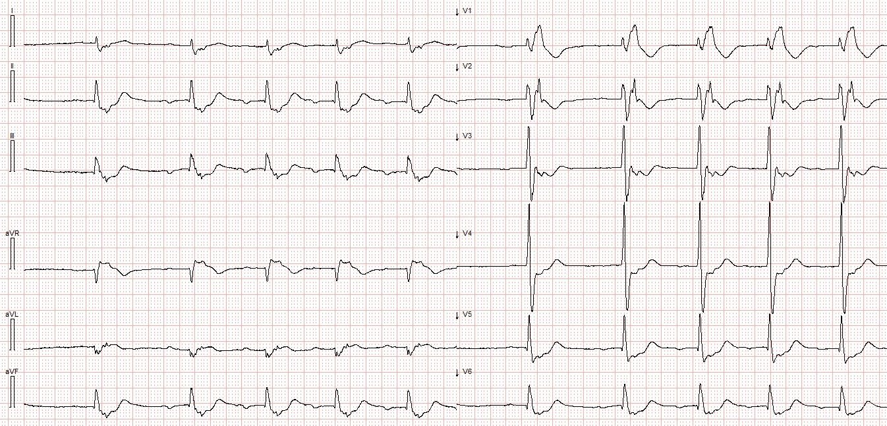
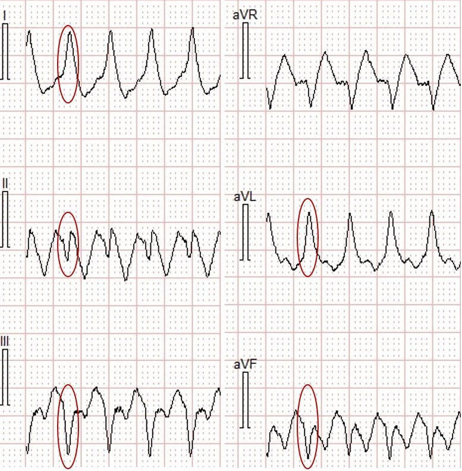
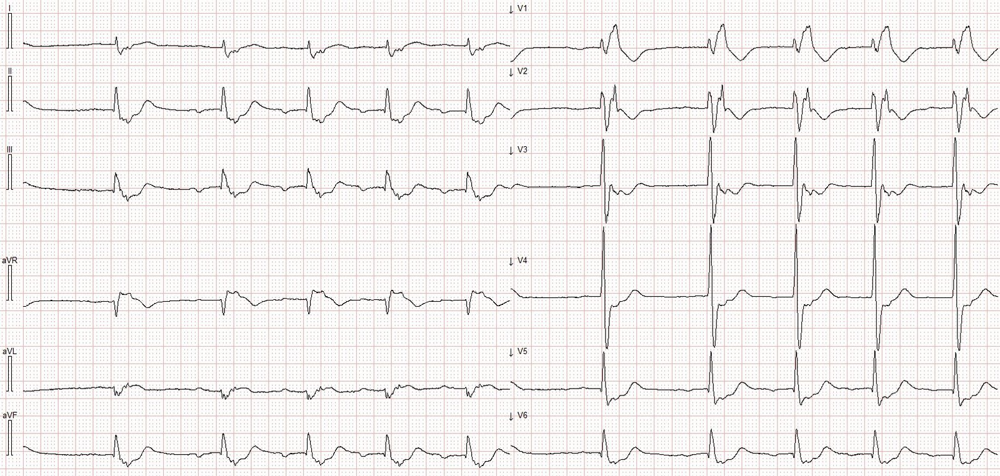
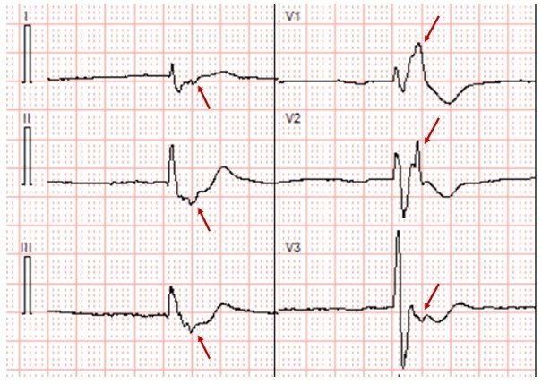
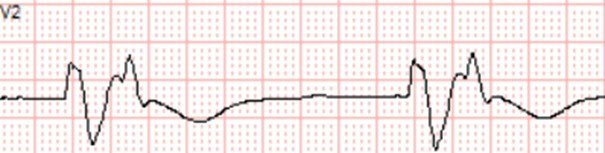
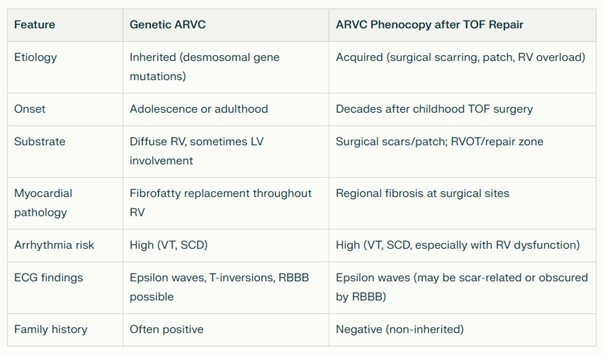
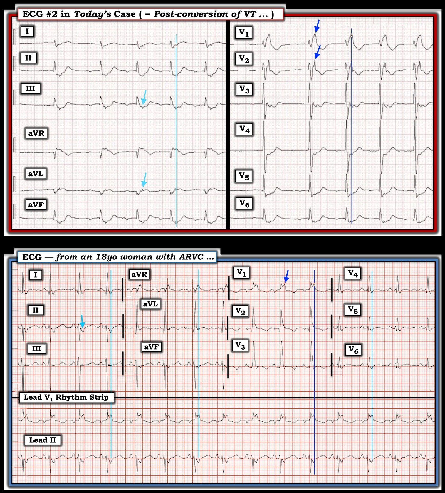

13/12/2025 — Điện sinh lý: Nhịp nhanh QRS rộng ở một người ngoài 70 tuổi
Bản dịch tiếng Việt của bài "Electrophysiology: Wide Complex Tachycardia in a 70-something" – Dr. Smith’s ECG Blog. Giữ nguyên toàn bộ 8 hình ảnh của bản gốc.


Tác giả: Magnus Nossen
Một người đàn ông 70 tuổi đột ngột xuất hiện hồi hộp đánh trống ngực và buồn nôn khi đang nghỉ ngơi. Ông lập tức gọi đội cấp cứu ngoài viện (EMS). Khi EMS đến, ông tỉnh táo với GCS 15, phủ nhận đau ngực và có thể cho nhân viên cấp cứu ngoài viện biết rằng ông có tiền sử thay van tim cơ học và đã trải qua nhiều cuộc phẫu thuật tim trước đó. Một điện tâm đồ (bên dưới) được ghi và truyền tới khoa cấp cứu (ED) tại chỗ, cách đó năm phút lái xe. Khi đến khoa cấp cứu, tần số thở của ông là 28/phút, độ bão hòa oxy 90% và huyết áp 112/73 mmHg. Ông vã mồ hôi. Bạn sẽ xử trí bệnh nhân này như thế nào?
Điện tâm đồ # 1


Bệnh nhân này rõ ràng bị tổn hại huyết động với độ bão hòa oxy thấp và vã mồ hôi. Lựa chọn tốt nhất là sốc điện chuyển nhịp khẩn cấp.
Nếu có thể, như trong ca này, luôn nên ghi điện tâm đồ 12 chuyển đạo trước khi sốc điện chuyển nhịp để SAU ĐÓ chẩn đoán được khi đã chuyển nhịp xong.
Điện tâm đồ ghi lại rối loạn nhịp này đã có sẵn và có thể được xem xét kỹ vào một thời điểm sau. Bệnh nhân được an thần và sốc điện chuyển nhịp thành công. Sau sốc điện chuyển nhịp, bệnh nhân nhanh chóng ổn định với điện tâm đồ ghi lại như bên dưới.
Điện tâm đồ # 2


Giờ đây, sau khi bệnh nhân đã ổn định, chúng ta có thời gian để xem lại điện tâm đồ lúc nhập viện và điện tâm đồ sau chuyển nhịp.
Diễn giải điện tâm đồ #1. Điện tâm đồ ban đầu trong ca hôm nay cho thấy một nhịp nhanh QRS rộng (WCT). Tần số tim khoảng 200 nhịp/phút. Phức bộ QRS âm ở chuyển đạo III và aVF, gần như hai pha ở chuyển đạo II và dương ở chuyển đạo I và aVL. Điều này cho một trục hướng về phía vai trái, vuông góc với chuyển đạo II.
Các chuyển đạo chi trong lúc WCT


Trong lúc WCT, ở các chuyển đạo trước tim có sóng QS ở các chuyển đạo bên phải (V1-V2) (cho thấy khử cực đi từ phải sang trái, và do đó khởi phát từ thất phải), và sóng R ở các chuyển đạo bên (I, aVL V5-V6), với QRS có hình thái giống LBBB. Kết hợp trục QRS và hình thái lại — WCT thấy trên điện tâm đồ #1 phù hợp với nhịp nhanh thất xuất phát từ phần dưới của thất phải.
Có nhiều nguyên nhân khác nhau gây WCT xuất phát từ thất phải. Nguyên nhân thường gặp nhất là VT đường ra thất phải (RVOT VT). Trong RVOT VT trục hướng xuống dưới, điều mà chúng ta không thấy trong ca hôm nay. Để xem một ví dụ về RVOT VT — hãy xem ca này. Vì trục KHÔNG hướng xuống dưới, rất khó có khả năng đây là RVOT VT.
Chúng ta hãy xem lại điện tâm đồ sau sốc điện chuyển nhịp. Bên dưới tôi đã đưa lại điện tâm đồ #2. Bạn thấy gì?


Diễn giải điện tâm đồ #2 QRS đầu tiên nhiều khả năng là một nhát thoát bộ nối. Ở phần còn lại của điện tâm đồ, rõ ràng có hoạt động nhĩ trước mỗi QRS. Có hình ảnh dẫn truyền RBBB và trục lệch phải giới hạn. Tuy nhiên, hình dạng RBBB không điển hình. Ở mọi chuyển đạo đều có những sóng lệch không hề kín đáo ở cuối QRS. Sóng lệch này dễ nhận thấy nhất ở chuyển đạo V2. Trong hình bên dưới, các mũi tên đỏ đánh dấu những gì tôi cho là sóng epsilon ở các chuyển đạo V1-V3, cũng như ở các chuyển đạo I, II và III.
Trích đoạn từ điện tâm đồ #2


Chuyển đạo V2 (50mm/s)


Diễn tiến lâm sàng: Bệnh nhân nằm viện không có biến cố gì. Siêu âm tim cho thấy đường ra thất phải giãn mạn tính, van động mạch phổi nhân tạo cơ học, miếng vá thông liên thất (VSD) với một lỗ thông liên thất tồn lưu nhỏ, và thất phải giãn, rối loạn chức năng. Các dấu hiệu siêu âm tim tương tự các lần khám trước. Bệnh nhân được cấy máy khử rung tim cấy được (ICD) hai buồng, và sẽ tiếp tục được theo dõi định kỳ theo các phác đồ đã được thiết lập dành cho người lớn mắc bệnh tim bẩm sinh (ACHD). Nhiều khả năng ông đã tiến triển thành kiểu hình sao chép ARVC (ARVC phenocopy).
Bàn luận: Bệnh nhân này sinh ra với tứ chứng Fallot (ToF), một dị tật tim bẩm sinh gồm thông liên thất, hẹp động mạch phổi, động mạch chủ cưỡi ngựa và phì đại thất phải. Bệnh nhân ToF thường được phẫu thuật tim sửa chữa theo nhiều giai đoạn trong thời thơ ấu. Theo thời gian, do quá tải áp lực và/hoặc thể tích — thất phải có thể giãn và xơ hóa, điều này cùng với sẹo phẫu thuật có thể tạo nên cơ chất gây loạn nhịp.
Một số bệnh nhân sau phẫu thuật sửa chữa ToF có thể xuất hiện một hội chứng lâm sàng đặc trưng bởi suy thất phải, nhịp nhanh thất và sóng epsilon trên điện tâm đồ. Tình trạng này được gọi là kiểu hình sao chép ARVC, phản ánh một bệnh cơ tim thất phải gây loạn nhịp mắc phải, bắt chước thể gia đình gặp trong ARVC do di truyền.
Kiểu hình sao chép ARVC thường xuất hiện nhiều thập kỷ sau phẫu thuật ban đầu ở bệnh nhân ToF, khi không có đột biến gen gia đình. (Xem Hình 1 để so sánh giữa ARVC do di truyền và kiểu hình sao chép ARVC).
Hình 1


Để có một tổng quan đầy đủ về rối loạn nhịp sau phẫu thuật sửa chữa ToF, bài báo này rất xuất sắc. Để xem thêm ví dụ về nhịp nhanh thất gặp trong ARVC, hãy xem ba ca sau:
Palpitations and presyncope in a 40-something (Hồi hộp đánh trống ngực và tiền ngất ở một người 40 tuổi)
A young lady with wide complex tachycardia (Một phụ nữ trẻ bị nhịp nhanh QRS rộng)
Young man with syncope while riding a bike (Nam thanh niên ngất khi đang đạp xe)
Những điểm cần học
- Kiểu hình sao chép ARVC là một nguyên nhân ít gặp của sóng epsilon và nhịp nhanh thất.
Tài liệu tham khảo:
Krieger, E. V. và cs. (2022). Arrhythmias in Repaired Tetralogy of Fallot: a scientific statement from the American Heart Association. Circulation Arrhythmia and Electrophysiology, 15(11), https://doi.org/10.1161/hae.0000000000000084
Secondary Arrhythmogenic Right Ventricular Cardiomyopathy Decades After Operative Repair of Tetralogy of Fallot – ClinicalKey (Bệnh cơ tim thất phải gây loạn nhịp thứ phát nhiều thập kỷ sau phẫu thuật sửa chữa tứ chứng Fallot)
= = =
======================================
BÌNH LUẬN CỦA TÔI, bởi KEN GRAUER, MD (13/12/2025):
Tôi thấy ca hôm nay của bác sĩ Nossen là một lời nhắc nhở mạnh mẽ về một loạt khái niệm quan trọng trong cấp cứu. Bao gồm:
- Rằng điện tâm đồ ban đầu trong ca hôm nay gần như chắc chắn là VT (khả năng thống kê lớn hơn 90-95%), và đây là một kết luận chúng ta có thể đưa ra chỉ trong vài giây bởi vì: i) Bệnh nhân này “lớn tuổi” (70 tuổi); — ii) Bệnh nhân này có bệnh tim đã biết (Bệnh nhân đã nói với nhân viên cấp cứu ngoài viện rằng ông đã được thay van tim + nhiều cuộc phẫu thuật tim trước đó); — và, iii) Hình thái QRS vô định hình trong lúc nhịp WCT đều lúc nhập viện ( = nhịp nhanh QRS rộng), không giống bất kỳ dạng rối loạn dẫn truyền đã biết nào, và với trục lệch “cực độ” (phức bộ QRS âm hoàn toàn ở chuyển đạo aVF) có giá trị tiên đoán mạnh cho VT.
- Dù đã nói như trên — ca hôm nay nhắc chúng ta rằng điều trị tối ưu một WCT đều, nhanh (~200/phút trong ca hôm nay) ở bệnh nhân có dấu hiệu mất ổn định huyết động — là sốc điện chuyển nhịp ngay lập tức, không cần cân nhắc các nguyên nhân có thể cho đến sau khi bệnh nhân đã được chuyển về nhịp bình thường. Như bác sĩ Nossen đã nêu — khái niệm MẤU CHỐT này đã được nắm vững trong ca hôm nay, với việc chuyển nhịp thành công về nhịp xoang kịp thời!
- Ngoài tiền sử (bệnh van tim và nhiều cuộc phẫu thuật tim trước đó) — điện tâm đồ sau chuyển nhịp (mà tôi đã đưa lại và đánh dấu bên dưới trong Hình 1) cung cấp thêm manh mối về căn nguyên VT của bệnh nhân này.
- Những người làm cấp cứu người lớn sẽ tiếp tục gặp ngày càng nhiều tình trạng tim mạch cấp cứu ở người lớn mắc bệnh tim bẩm sinh (CHD) (Congenital Heart Disease).
- Sóng epsilon có tồn tại — và không chỉ ở bệnh nhân ARVC (bệnh cơ tim thất phải gây loạn nhịp).
= = =
Người lớn mắc bệnh tim “bẩm sinh”
Lĩnh vực bệnh tim bẩm sinh đã có những tiến bộ vượt bậc trong những thập kỷ gần đây. Hãy xem xét những điều sau:
- Ngày nay — 97% trẻ sinh ra mắc CHD sẽ sống đến tuổi trưởng thành — và 70% trong số những người còn sống ở tuổi 18 sẽ sống đến 70 tuổi (như trường hợp bệnh nhân hôm nay). Kết quả là — hiện nay số người mắc CHD trên 20 tuổi nhiều hơn số người dưới tuổi đó! ĐIỀU CỐT LÕI: Tất cả chúng ta sẽ tiếp tục gặp ngày càng nhiều người lớn đến khám vì các vấn đề tim cấp tính do CHD (Dellborg: Circulation 149:1397-1399, 2024 — và — Moodie: Tex Heart Inst J: 38(6):705, 2011).
- Theo tài liệu Dellborg nêu trên — ~60% CHD là nhẹ (thông liên nhĩ (ASD); thông liên thất (VSD); hẹp động mạch phổi) — ~30% là trung bình (hẹp eo động mạch chủ; tứ chứng Fallot; hẹp van động mạch chủ; dị tật Ebstein) — và ~10% là các ca phức tạp (tâm thất độc nhất; teo động mạch phổi; chuyển vị đại động mạch). Hiện nay, tỷ lệ sống đến tuổi trưởng thành tăng đáng ngạc nhiên ngay cả ở nhiều ca CHD phức tạp nghiêm trọng nhất.
- Cùng với tuổi thọ tăng lên của bệnh nhân CHD ở mọi mức độ nặng — là thách thức trong việc quản lý những bệnh nhân này, vốn đối mặt với nguy cơ tăng đáng kể do có khuynh hướng tiến triển suy tim, bệnh mạch vành, viêm nội tâm mạc, đột quỵ — và đặc biệt là rối loạn nhịp trên thất và rối loạn nhịp thất (như ở bệnh nhân hôm nay).
= = =
Điện tâm đồ sau chuyển nhịp: Sóng Epsilon …
Sóng epsilon không thường gặp. Tôi chưa bao giờ thấy chúng trong suốt 30 năm làm bác sĩ chăm sóc ban đầu (Attending), dù đã đọc tất cả điện tâm đồ ngoại trú cho 35 người hành nghề, cũng như nhiều điện tâm đồ nội trú của chúng tôi (hoặc ít nhất — tôi đã không nhận ra bất kỳ sóng epsilon nào có thể đã đi qua tay mình). Ngay cả bây giờ, trong 15+ năm kể từ khi tôi nghỉ hưu khỏi công tác học thuật và nhận các bản ghi khiến những người làm cấp cứu khắp thế giới bối rối — số ca thực sự có sóng epsilon mà tôi từng gặp vẫn rất hiếm hoi.
- Lý do tôi ít có kinh nghiệm nhìn thấy sóng epsilon ngoài y văn có hai mặt: i) Sóng epsilon rất hiếm! — và, ii) Ngay cả khi gặp những bệnh nhân có sóng epsilon — chúng thường (thường là vậy) không được nhận ra, hoặc do những thiếu sót kỹ thuật trong quá trình ghi điện tâm đồ bị bỏ qua — hoặc do người hành nghề không chắc chắn cách nhận diện một dấu hiệu điện tâm đồ hiếm đến vậy (Xem Bình luận của tôi ở cuối trang trong bài ngày 3 tháng Sáu năm 2023 — trong đó tôi nhắc lại tầm quan trọng của cài đặt bộ lọc và việc sử dụng hệ thống chuyển đạo Fontaine đặc biệt để tối ưu khả năng phát hiện các sóng lệch epsilon)
- LƯU Ý: Nhiều ví dụ về sóng epsilon mà tôi từng thấy trong các bài báo hay sách giáo khoa thể hiện dấu hiệu này như một sóng lệch kín đáo, biên độ thấp, xuất hiện sau phức bộ QRS ở không quá một vài chuyển đạo chọn lọc. Chính vì lý do đó mà điện tâm đồ sau chuyển nhịp hôm nay càng đáng chú ý — vì nó có sóng epsilon biên độ không nhỏ, và thấy được ở nhiều chuyển đạo (Bản ghi phía trên trong Hình 1).
- Điều khiến tôi “để mắt” trong điện tâm đồ sau chuyển nhịp là phức bộ QRS trông rộng đến mức nào (thời gian kéo dài hơn đáng kể 1 ô lớn ở chuyển đạo V1 = vượt xa 0,20 giây, theo các mũi tên XANH LAM ở chuyển đạo V1,V2 trong Hình 1). Một “thời gian QRS” trên 0,24 giây ở bệnh nhân không có ngộ độc nền nào dường như là quá dài để chỉ là kết quả của QRS kéo dài — do đó chúng tôi giả định có một loại sóng lệch khác (tức là một sóng epsilon).
- Để làm rõ thời điểm của các sóng lệch “thêm” thấy ở các chuyển đạo ngực khác — tôi đã vẽ một đường thẳng đứng màu XANH LAM đậm đi qua đỉnh của sóng lệch epsilon dương dễ nhận ra nhất này ở chuyển đạo V1 — và một đường thẳng đứng màu XANH LAM nhạt đi qua sóng epsilon ở các chuyển đạo chi. Nhưng như bác sĩ Nossen đã lưu ý — sóng epsilon có thể gặp trong những tình trạng khác ngoài ARVC = kiểu hình sao chép ARVC, trong đó các vùng hoạt hóa thất muộn có thể gặp không chỉ trong CHD (như tứ chứng Fallot đã sửa chữa, như ở bệnh nhân hôm nay) — mà còn trong các bệnh cơ tim thâm nhiễm khác, như sarcoidosis tim (Omotoye và cs.: JACC Case Reports 3(8): 1097-1102, 2021).
- Để so sánh — tôi đã thêm vào Hình 1 điện tâm đồ của một phụ nữ 18 tuổi được xác định mắc ARVC, trong đó chúng ta thấy các sóng epsilon khổng lồ tương tự ở nhiều chuyển đạo (ca này lấy từ ĐÂY). Việc thấy 2 ví dụ về sóng epsilon khổng lồ này củng cố lại niềm tin của tôi rằng đây là một dấu hiệu có thật mà chúng ta cần tìm kiếm (đặc biệt trên điện tâm đồ 12 chuyển đạo sau chuyển nhịp, sau khi VT bền bỉ đã chấm dứt) — đồng thời nhận thức rằng phần lớn thời gian, những sóng epsilon chúng ta có thể quan sát được sẽ không nổi bật như trong Hình 1.
= = =
Hình 1: So sánh điện tâm đồ sau chuyển nhịp hôm nay (TRÊN) — với điện tâm đồ của một phụ nữ 18 tuổi được xác định mắc ARVC (DƯỚI).


= = =
= = =